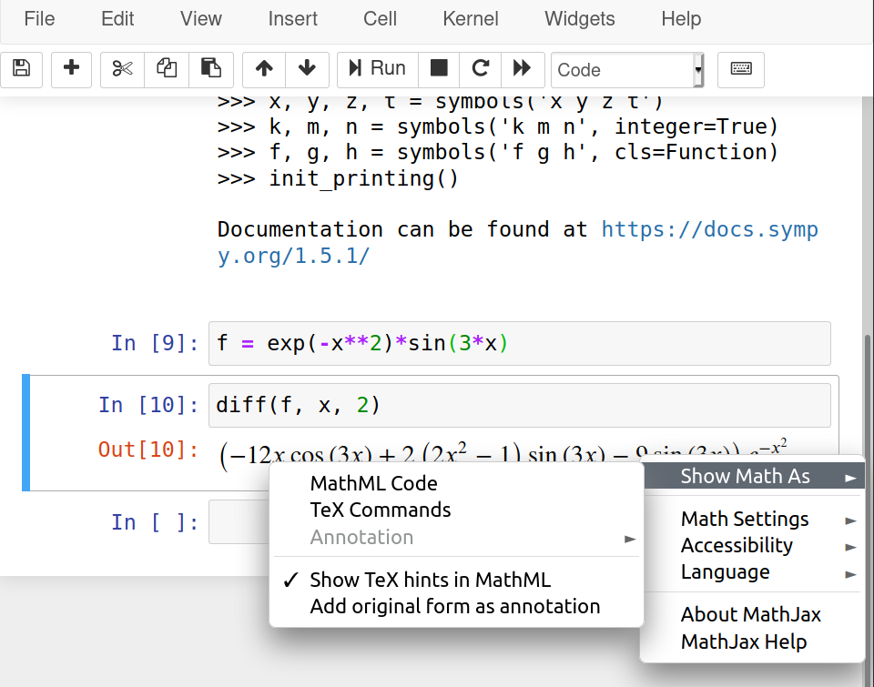

Technical writing: using math
In a previous post I mentioned some general aspects of technical writing. In this one, I would like to talk about including mathematical expressions in technical documents.
There are two main ways to include math in your documents:
using text; and
using a graphic interface.
Using a graphic interface, such as the equation editor in LibreOffice Writer or MS Word, or MathType is convenient. You don't need to memorize anything and you can look at your expressions while creating them. Nevertheless, it can be slow compared to using text input — once you are comfortable with the syntax.
There are two main flavors of equations used over the internet:
MathML is a W3C standard for equations and it is included in HTML5, so it would work in all modern browsers. The problem with it is that it is not designed to be written by hand. So one can use it if have some automatic way of generating the code.
LaTeX is my suggested way to write equations. The learning curve might be a little bit steep at the beginning but it pays off.
One tool that helps with equations is MathPix Snip that automatically generates LaTeX or MathML code from an image, even a handwritten one. Another tool that is really useful is Detexify that let you draw a symbol and gives you the LaTeX syntax for it.
In the remaining of the posts I will show my suggestions for working with equations in LibreOffice and MS Word. If you are using LaTeX or MarkDown/ReStructuredText for your documents you are already using LaTeX for your equations.
LibreOffice
LibreOffice has its own math editor with its own syntax and it works fine for small expressions, but it gets complicated for large equations or long algebraic manipulations. For LibreOffice I would suggest to use TexMaths, it is simple to use and works for the word processor (Writer) and presentations (Impress). I suppose it also works for spreadsheets (Calc), but I don't remember using equations in one.
MS Office
MS Office has its own math editor as well, it works fine and is easy to use. Nevertheless, the same problem appears when you want long expressions. One option is to directly use LaTeX in Office but I prefer to use IguanaTex. It is a complement that allows to input equations similarly to TexMaths in LibreOffice.
You could also directly paste MathML equations into MS Word (>2013 and Windows).
Use a SymPy
Indepent of the tool that you use to write your documents I strongly suggest to use a CAS (Computer Algebra System), such as Mathematica or SymPy. These programs have automatic generation of LaTeX and MathML from expression and that can ease the process a lot.
Let's check an example. Suppose that we have the function
and we want to compute its second derivative
The following code gives us the LaTex code
that is
\left(- 12 x \cos{\left(3 x \right)} + 2 \left(2 x^{2} - 1\right) \sin{\left(3 x \right)} - 9 \sin{\left(3 x \right)}\right) e^{- x^{2}}
That corresponds to the code that I used above to render the equation
If, we wanted the MathML code of that expression we could use the following snippet
from sympy import * init_session() f = exp(-x**2)*sin(3*x) fxx = diff(f, x, 2) print(mathml(fxx, printer="presentation"))
notice the extra argument printer="presentation". If we want to add
this to MS Word, for example, we could add the output (that I will not
show because is really long) inside the following
When using Jupyter Notebook this can be done graphically with a right click over the expression. Then, the following menu is shown
References
“How to Insert Equations in Microsoft Word.” WikiHow, https://www.wikihow.com/Insert-Equations-in-Microsoft-Word. Accessed 3 Aug. 2020.
“Copy MathML into Word to Use as Equation.” Stack Overflow, https://stackoverflow.com/questions/25430775/copy-mathml-into-word-to-use-as-equation. Accessed 3 Aug. 2020.
“Python - Output Sympy Equation to Word Using Mathml.” Stack Overflow, https://stackoverflow.com/questions/40921128/output-sympy-equation-to-word-using-mathml. Accessed 3 Aug. 2020.
OERPUB (2016), “Mathconverter”, https://github.com/oerpub/mathconverter, Accesed 3 Aug. 2020.
Comments
Comments powered by Disqus